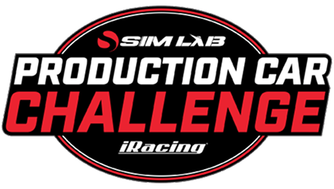
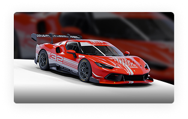

Ver Video
Ver VideoIntroducción
Agradecimientos y saludos
 Ir a Contexto
Ir a ContextoAntes que nada, quiero agradecerte tu participación. Me llamo Franco Aguirre y me encargo de analizar y mejorar la experiencia de usuario de este producto, por el cual te invité hoy.
Si estás de acuerdo, me gustaría grabar la conversación. Todo lo que digas se usará para tener un registro y poder realizar un mejor análisis. ¿Te parece bien?
No hay respuestas correctas o incorrectas; solo me interesa tu experiencia con la app para mejorarla. Es importante que sepas que no te estoy probando a ti, sino al programa. Estaré atento a cualquier problema que tengas al usarla. De esta manera, podré realizar los ajustes necesarios para mejorar tu experiencia como usuario.
Recuerda decir en voz alta todo lo que pienses e interacciones en las pantallas durante el proceso.
Contexto
Sobre iRacing
Es esencialmente un videojuego de autos. Particularmente este tiene mucha fama de ser muy competitivo y realista, a tal punto que para disfrutarlo es altamente recomendado tener un volante y pedales conectados a la PC.
Requiere suscripción mensual y se corre con marcas de autos y circuitos reales. Simula eventos reales tanto en formato, duración y reglas.
El juego ofrece carreras competitivas con otros jugadores.

El objetivo del juego depende de cada uno, pero la esencia de un juego de autos de carreras es ganar carreras.
El resultado de las carreras aumentará o disminuirá tu puntuación de habilidad. Esta puntuación se utiliza para emparejarte con jugadores similares.
Otra forma de progresar es mediante las licencias.
Cada licencia habilita nuevas y más variadas carreras con diferentes formatos, autos y pistas.
Para aumentar la licencia es necesario terminar las carreras con pocos accidentes, ya sea con otros jugadores o solo.


Estas carreras son siempre en un horario fijo y se repiten constantemente, dependiendo del evento, cada 1 o 2 horas.
Ambientación
En la piel del piloto
Sos un usuario nuevo de iRacing.
Quisiste entrar al mundo del simracing y para eso te suscribiste a iRacing.
Descargás y entrás a la UI de iRacing para buscar una carrera.
Pasaste el onboarding, en donde te preguntaron qué disciplina te gusta correr (sport car, formula, oval, dirt oval, dirt road).
Elegiste sport car y luego de hacer algunas carreras online de licencia Rookie, lograste subir a la licencia D de sport cars.
Instrucciones
Probando el prototipo
Para esta prueba, te pido que realices una serie de tareas en el prototipo. No te olvides de decir en voz alta lo que ves y lo que estás haciendo.
Es posible que encuentres callejones sin salida y botones que no funcionan o que no cumplen su función, ya que esto es un prototipo, no la aplicación real. Recuerda también decirme cuando creas que hayas terminado la tarea.
 Tarea 1Intentar en prototipo la Tarea 1 (se abre en una pestaña nueva)
Tarea 1Intentar en prototipo la Tarea 1 (se abre en una pestaña nueva)
Querés correr una carrera de la serie “Production Car Challenge by Sim-Lab” de Clase D. Primero, debés seleccionar como favorito el auto “Global Mazda MX-5 Cup” de los 4 disponibles para correr siempre con ese.

 Clase D
Clase D
Tarea 2Intentar en prototipo la Tarea 2 (se abre en una pestaña nueva)
Ahora querés correr la “Ferrari Challenge” de Clase D. Como todavía no es el horario para la carrera, querés entrar a una práctica de esta serie con el “Ferrari Challenge”.
Clase D
Cuestionario
Facilidad de las tareas


Preguntas Cualitativas
Entendiendo los detalles
- ¿Tuviste alguna complicación con algo en particular? ¿Algo que haya sido incómodo o difícil de entender?
- ¿Cambiarías algo? ¿Podrías remarcar cosas positivas y negativas de este prototipo?
- ¿Buscabas o necesitabas alguna información específica que no estaba ahí?
Cierre
Agradecimientos
Muchas gracias por tu participación hoy. Llegamos al final.
¿Hay alguna pregunta o comentario extra que quieras compartir conmigo?
Perfecto. Gracias de nuevo y que tengas buen día.